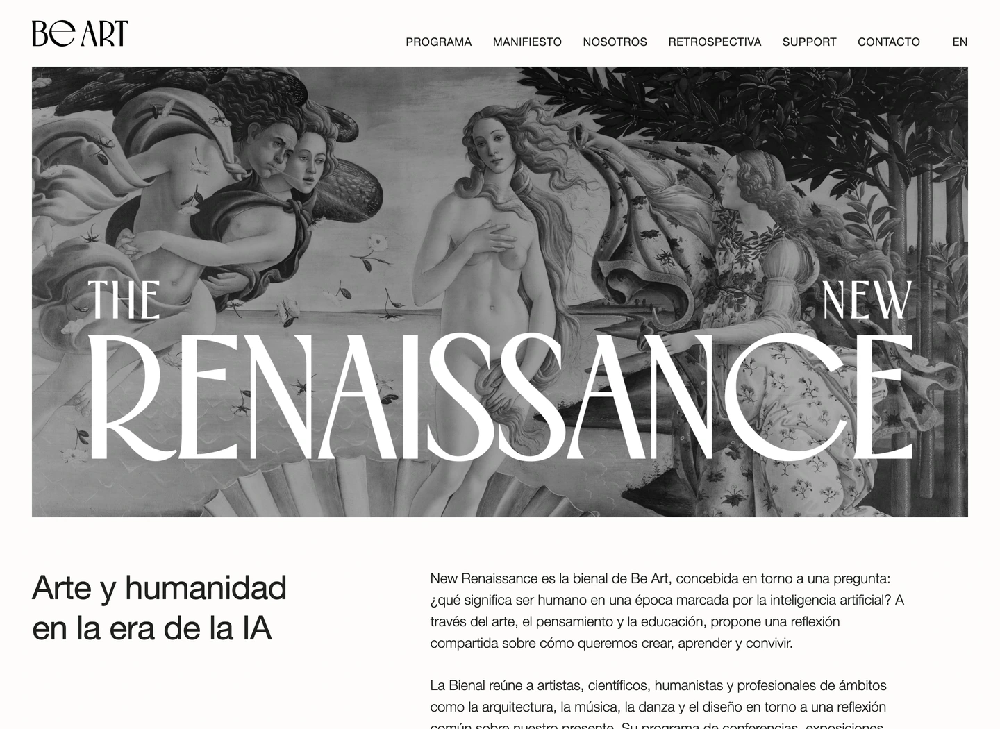

Propuesta 01 de 05
Título grande sobre la imagen
Mantiene la escala del título original, elimina las fechas y baja el conjunto hasta igualar el margen inferior con los laterales.

Primer ensayo / Título grande sin fechas
Diez aspectos que siguen pendientes.
- El título domina la cabecera. El tamaño de «RENAISSANCE» concentra casi toda la atención.
- La pintura se trata como un fondo para el título. Las letras ocultan cuerpos, ropajes y paisaje, e interfieren con la composición de Botticelli en lugar de dejar que la obra se aprecie por sí misma.
- Compite con Venus. La figura central y el título reclaman protagonismo al mismo tiempo.
- El contraste del blanco es irregular. Algunas letras destacan más que otras y los trazos finos se pierden en las zonas claras.
- El título sigue exigiendo una pintura demasiado oscura. Para que las letras blancas destaquen, el Botticelli pierde luminosidad y el conjunto resulta sombrío.
- «THE» y «NEW» quedan muy separados. Su posición en extremos opuestos hace que el nombre se perciba como tres piezas.
- La lectura depende del encuadre. Un cambio en la posición de la pintura cambia también el fondo de cada letra.
- El título tiene poco espacio alrededor. Aunque los márgenes están equilibrados, el conjunto ocupa casi todo el ancho.
- Ya no aparecen las fechas. La cabecera deja de explicar cuándo se celebra la bienal.
- Falta «La bienal de Be Art». El nombre por sí solo no explica qué tipo de evento se presenta.
Segundo ensayo / Título más pequeño y centrado
Más espacio, pero persisten diez límites.
- El título sigue interfiriendo con la composición de Botticelli. La reducción libera los bordes, pero cubre el centro de la escena: la pintura continúa funcionando como fondo del texto en lugar de apreciarse por sí misma.
- Venus y el título comparten el mismo centro. Ambos compiten por ser el primer elemento que miramos.
- Las letras se cruzan con detalles importantes. El cuerpo de Venus, las figuras y la vegetación quedan detrás del texto.
- El blanco sigue teniendo un contraste desigual. Los trazos finos pierden nitidez sobre las zonas claras, incluso con el título más pequeño.
- Reducir el título no resuelve el oscurecimiento de la obra. Para que se lea sobre la pintura, seguimos restándole luminosidad al Botticelli y dando a la portada un tono sombrío.
- «THE» y «NEW» todavía parecen elementos sueltos. La distancia entre las palabras debilita la unidad del título.
- No hay una zona propia para el nombre del evento. Pintura e identidad continúan superpuestas.
- La posición depende de este recorte concreto. Reencuadrar la imagen puede empeorar los cruces entre las letras y las figuras.
- Las fechas siguen sin aparecer. La cabecera no permite saber cuándo tiene lugar la bienal.
- Sigue faltando la presentación de la bienal. «La bienal de Be Art» aportaría el contexto que sí ofrecen las opciones con franja.